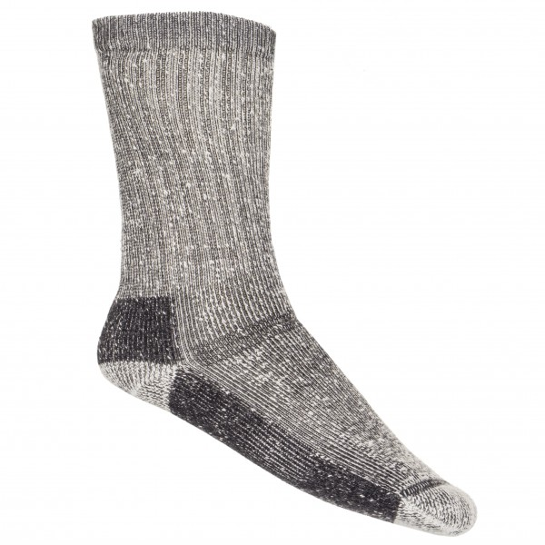
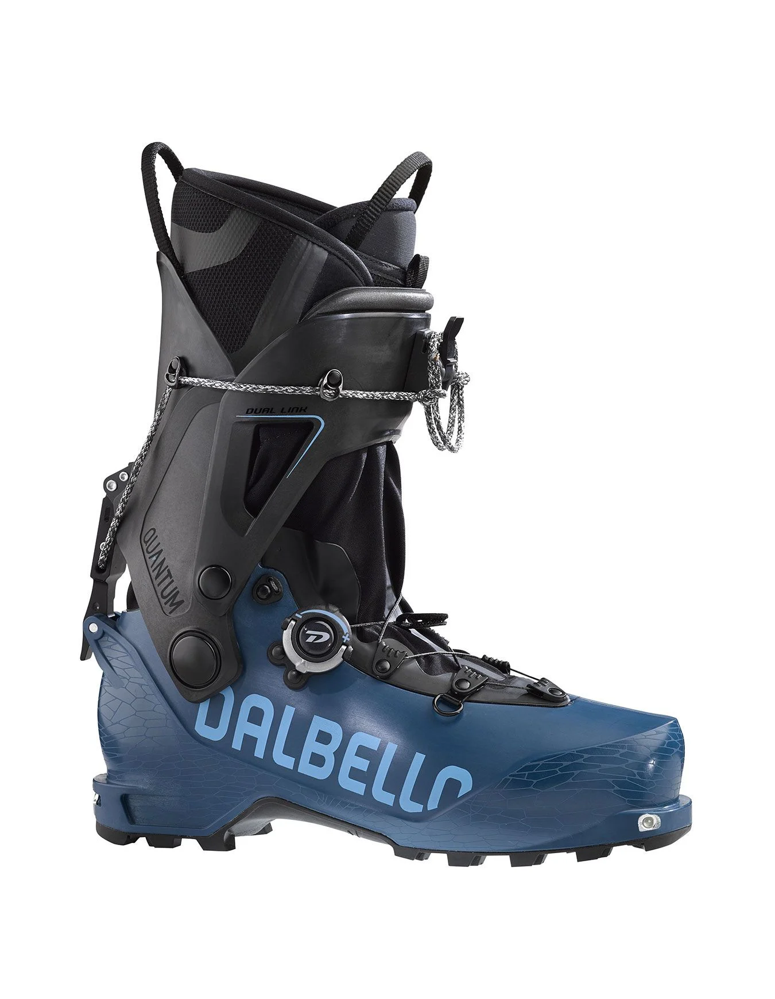
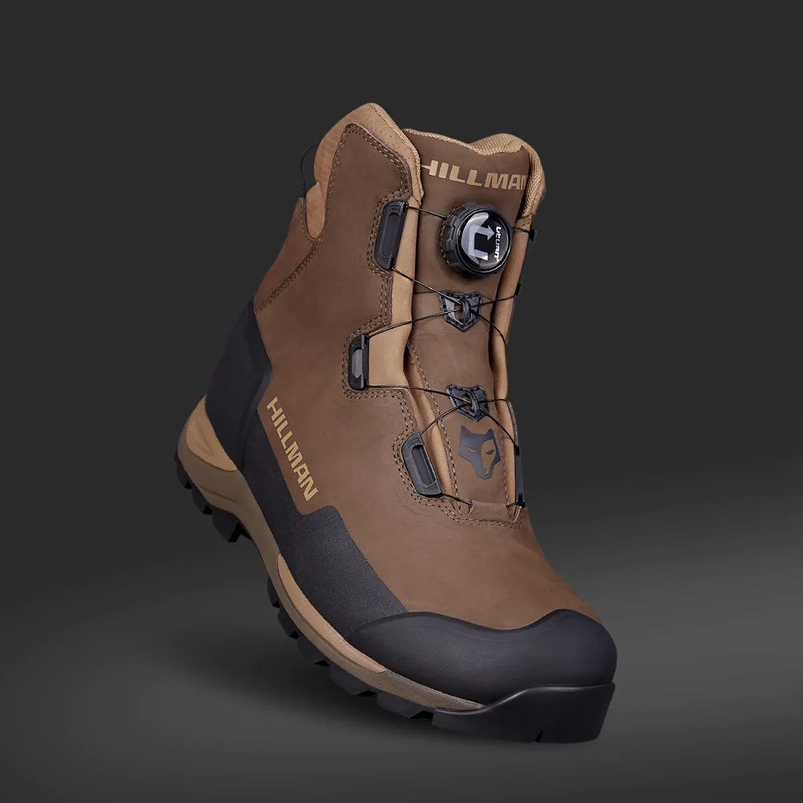

On fini par les pieds pour cette catégorie Corps qui est importante vu que vous en avez besoin de vos pieds.

Les chausettes bien-sûr mais bon il faut tous de même le precisé surtout qu'elles doivent être chaude, disponible sur le site www.alpiniste.fr

Les chaussures de ski de randonné forcement vous allez marcher donc il faut bien s'equiper sur www.snowleader.com

Les chaussures traditionnel de randonné son aussi trés pratique sur le site www.hillmanchasse.comLes guêtres pratique pour la randonnée, évite de se mouiller le bas du pantalon sur www.decathlon.fr